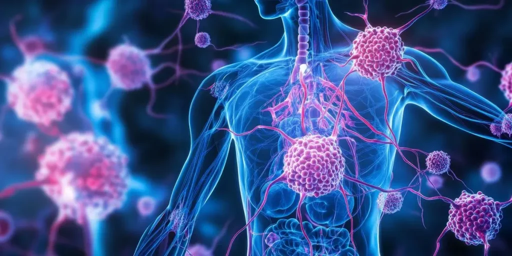
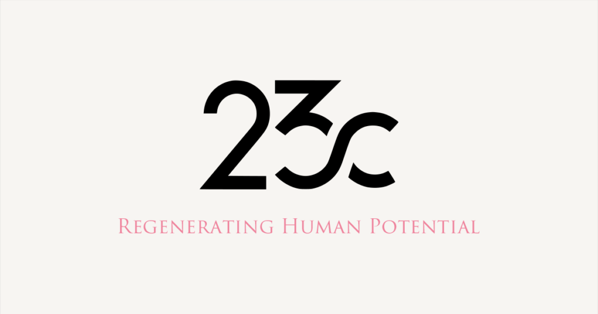

TOP
はじめての方へ
私たちについて
マレーシアで受ける幹細胞治療について
記事一覧
選ばれる理由
ウォートンジェリー幹細胞について
23Cの幹細胞培養施設について
施術メニュー
幹細胞治療
NK細胞療法
セクレトーム療法
対応可能な症状
治療の流れ
治療費
よくある質問
お問い合わせ
記事一覧
HOME
記事一覧
2025.03.14
幹細胞・再生医療
海外で受ける幹細胞治療の安全性と法規制、避けるべき国とは？

2025.03.14
幹細胞・再生医療
他家幹細胞は危険？幹細胞治療に関する誤解と実際のリスク

2025.03.01
お知らせ
ホームページをリニューアルしました
2025.01.19
幹細胞・再生医療
再生医療でED（勃起不全）の根本治癒に挑む
2021.02.01
コラム
新型コロナウイルス感染から死に至るまでと、それを守る免疫力とは
2020.11.01
幹細胞・再生医療
パイエル板で紐解く間葉系幹細胞とエラスチンの関係
2020.03.20
幹細胞・再生医療
再生医療に活用される幹細胞の種類
« 前へ
1
2